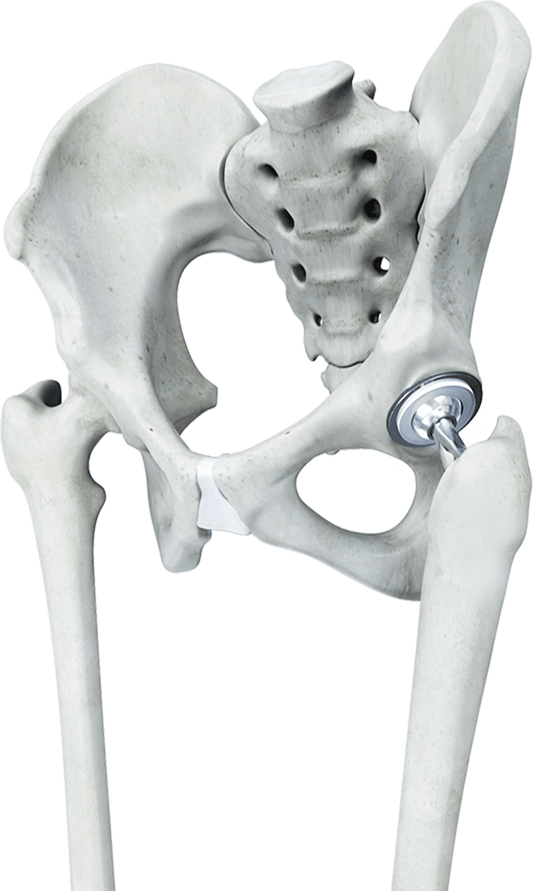
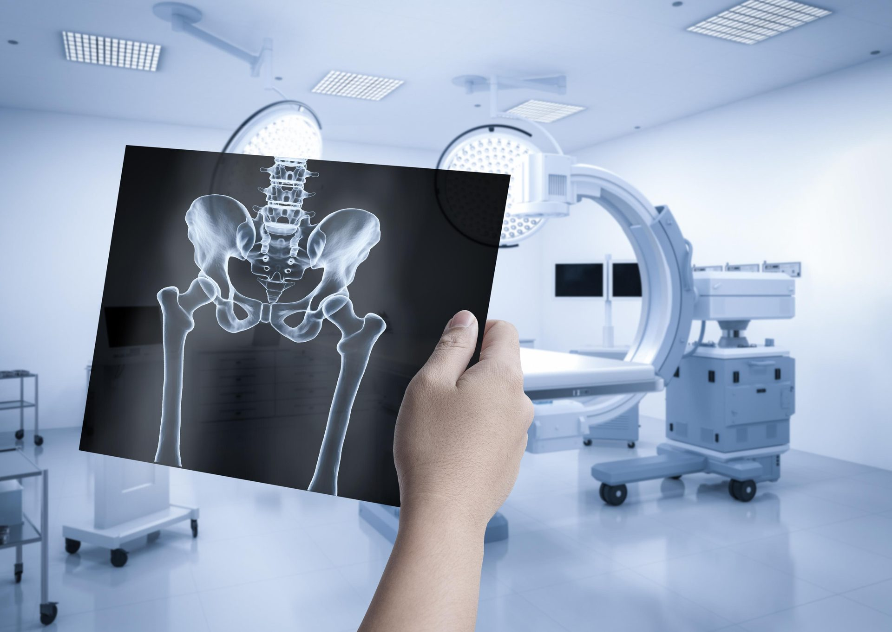
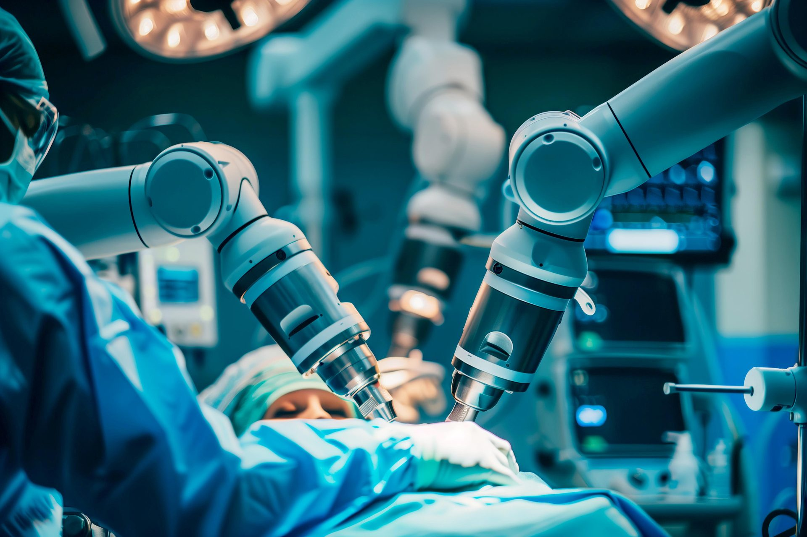
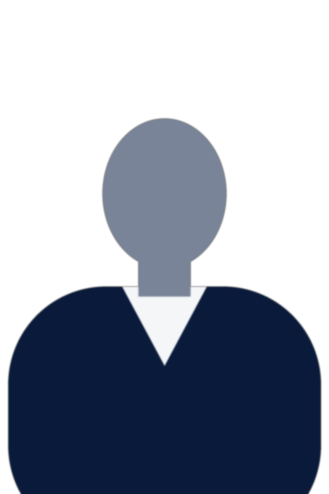
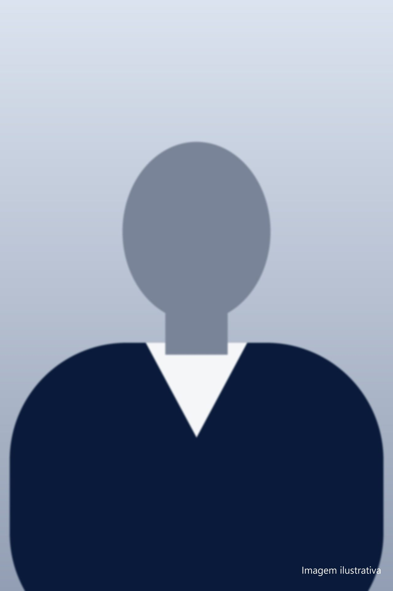

Artrose de quadril (coxartrose)
O que é a
Prótese de Quadril?
(Artroplastia do Quadril)
A artroplastia do quadril é uma cirurgia que substitui a articulação danificada por uma prótese composta por materiais de alta durabilidade, projetados para restaurar o movimento natural e a estabilidade da articulação.
Essa substituição devolve força, equilíbrio e liberdade de movimento. Com uma equipe experiente e técnicas cirúrgicas atuais, é possível reduzir significativamente a dor, restaurar a mobilidade do quadril e permitir o retorno às atividades do dia a dia com mais conforto e segurança.

Quais as indicações da cirurgia de Prótese de Quadril?
Entre as indicações mais comuns da cirurgia de artroplastia (prótese) de quadril podemos citar:
Osteonecrose ou necrose avascular da cabeça femoral
Fraturas do colo
femoral
Desgaste após trauma ou artrose pós traumática

Artrose do quadril secundária a doenças de infância (displasia do quadril)
Essas condições costumam causar dor intensa e limitação funcional, e a cirurgia permite retomar as atividades do dia a dia com conforto e segurança.
Quais os tipos de prótese de quadril?
A prótese de quadril pode variar conforme o modo de fixação ao osso e os materiais utilizados, sendo sempre escolhida de forma individualizada para cada paciente.
Prótese cimentada e prótese não cimentada
Prótese cimentada:
fabricada em metal polido e fixada ao osso por meio de cimento ortopédico, um polímero
denominado polimetilmetacrilato (PMMA). Essa técnica proporciona estabilidade imediata do
implante, é amplamente utilizada e consagrada na ortopedia, com excelentes resultados
clínicos em diferentes perfis de pacientes.
Prótese não cimentada:
produzida em ligas metálicas especiais e fixada ao osso sem o uso de cimento. Sua
superfície áspera ou porosa, é tratada para favorecer a integração óssea gradual,
permitindo que o próprio osso se fixe ao implante ao longo do tempo. Trata-se de uma
técnica amplamente utilizada na artroplastia moderna, com resultados consistentes e
duradouros quando bem indicada.
Materiais da prótese de quadril
Independentemente do tipo de fixação, as próteses atuais são fabricadas com materiais de alta durabilidade e excelente desempenho clínico:
Ligas metálicas:
presentes nos componentes da prótese — como haste femoral, acetábulo e, em alguns casos, na cabeça femoral — garantem resistência mecânica, estabilidade e longa vida útil.
Polietileno de alta ligação cruzada:
polímero biocompatível e altamente resistente ao desgaste, utilizado como superfície de contato da articulação, reduzindo o atrito e contribuindo para maior durabilidade do implante.
Cerâmica:
material com baixo atrito e alta resistência ao desgaste, amplamente utilizado nas artroplastias atuais, associado a movimentos mais suaves e excelente desempenho a longo prazo.
Escolha personalizada
A definição entre prótese cimentada ou não cimentada, bem como a combinação dos materiais, é feita após avaliação clínica e análise dos exames de imagem, sempre com o objetivo de oferecer segurança, estabilidade, durabilidade e melhor função articular para cada paciente.
Quando fazer a cirurgia de prótese de quadril?
A indicação da cirurgia de prótese de quadril é definida após avaliação clínica detalhada e análise dos exames de imagem, considerando a intensidade da dor, o impacto na qualidade de vida e os objetivos individuais do paciente.
A artroplastia de quadril costuma ser recomendada quando há comprometimento significativo da articulação e os tratamentos conservadores — como medicações, fisioterapia e infiltrações — já não proporcionam alívio adequado.
Os sinais e sintomas mais frequentes incluem:
Desconforto para caminhar ou permanecer em pé por períodos prolongados
Dificuldade para sentar ou levantar da cadeira
Incômodo ao entrar e sair do carro
Dor ao deitar, especialmente à noite, que pode atrapalhar o sono
Limitação para tarefas simples do dia a dia, como calçar meias ou lavar os pés
Rigidez e redução dos movimentos do quadril
A decisão pela cirurgia é sempre individualizada, com foco em aliviar a dor, restaurar a função do quadril e permitir um retorno mais seguro e confortável às atividades cotidianas.
Como é feita a cirurgia de artroplastia de quadril?
Na artroplastia do quadril, o cirurgião remove as superfícies articulares danificadas e as substitui por componentes protéticos desenvolvidos para reproduzir a anatomia e a biomecânica do paciente, permitindo que o quadril volte a se movimentar de forma estável e sem dor.

O procedimento é precedido por um planejamento pré-operatório individualizado, no qual são analisados exames de imagem, alinhamento, anatomia óssea e necessidades funcionais de cada paciente.
Essa etapa é fundamental para definir a técnica mais adequada e garantir um posicionamento preciso da prótese.
Essa abordagem proporciona resultados previsíveis, melhor função articular e maior conforto no pós-operatório.
A cirurgia pode ser realizada por técnica convencional ou com auxílio da cirurgia robótica, conforme o perfil do paciente e a indicação clínica — tema abordado em detalhes na próxima seção.
Cirurgia Robótica: precisão, segurança e previsibilidade
A cirurgia robótica é uma evolução importante na artroplastia do quadril, permitindo um nível de precisão superior ao das técnicas tradicionais em casos selecionados.
Com o auxílio de um sistema computadorizado de navegação, a cirurgia é planejada previamente em ambiente tridimensional (3D), simulando o posicionamento ideal da prótese antes mesmo de entrar em sala cirúrgica.
Durante o procedimento, essa tecnologia auxilia o cirurgião a executar o plano com maior exatidão, respeitando a anatomia individual de cada paciente. O resultado é uma cirurgia mais personalizada, com maior controle em cada etapa.
Principais benefícios da cirurgia robótica:
- Planejamento cirúrgico individualizado em 3D, ajustado à anatomia do paciente;
- Posicionamento mais preciso dos componentes da prótese;
- Menor agressão aos tecidos, com potencial redução da dor no pós-operatório;
- Maior estabilidade articular e resultados mais previsíveis;
- Contribuição para maior durabilidade da prótese a longo prazo.

Nem todos os casos exigem cirurgia robótica. A decisão entre a técnica robótica ou a convencional é sempre individualizada, baseada em critérios clínicos, exames de imagem e objetivos do paciente.
O mais importante é indicar a melhor técnica para cada situação, visando segurança, função e qualidade de vida. Lembrando que, as decisões e os movimentos são realizados e supervisionados pelo médico. Por esse motivo, quanto maior a experiência e a formação do seu médico, melhores os resultados.
Recuperação após a cirurgia de prótese de quadril
A reabilitação pós operatória é uma das etapas mais importantes para o sucesso da artroplastia. Logo nos primeiros dias após a cirurgia, o paciente inicia este processo com acompanhamento fisioterápico, seguindo orientações específicas para retomar os movimentos de forma progressiva e segura.
A evolução costuma ser gradual e constante. À medida que a dor diminui e a força muscular retorna, o paciente readquire confiança e liberdade de movimento.
Veja o que esperar nas primeiras semanas:
Alta hospitalar entre 24 e 48 horas;
Uso de muletas ou andador nas primeiras semanas, garantindo segurança na marcha;
Retorno da prática esportiva a partir de 3 meses, conforme a modalidade e a evolução individual.
Melhora perceptível da dor e da mobilidade já nas primeiras semanas de recuperação.
Retomada gradual das atividades leves entre 2 e 4 semanas, conforme orientação médica;
Com protocolos modernos de reabilitação e o acompanhamento próximo da equipe médica e fisioterápica, o paciente tende a voltar a andar de forma independente mais rapidamente, retomando suas atividades com conforto, estabilidade e qualidade de vida.

Por que escolher o Dr. Rafael Moretti?
Escolher o cirurgião certo faz toda a diferença no sucesso da sua cirurgia de prótese de quadril ou joelho.
O Dr. Rafael Moretti é referência em artroplastia de quadril e joelho em Curitiba. Reconhecido por unir experiência, precisão técnica e tecnologia moderna para oferecer resultados seguros e duradouros.
Com mais de 15 anos de experiência em cirurgia ortopédica de alta complexidade, o Dr. Rafael construiu uma trajetória sólida, pautada na excelência clínica e no cuidado individualizado com cada paciente.
Formado pela Universidade Federal do Paraná (UFPR), realizou especialização internacional em Artroplastia de Quadril e Joelho em Lyon, na França, um dos centros mais respeitados do mundo em Ortopedia Reconstrutiva.
Cada paciente é acompanhado de forma completa e humanizada — desde o diagnóstico até a reabilitação — com foco em reduzir a dor, restaurar a mobilidade e promover qualidade de vida em longo prazo.
Quando indicado, o Dr. Rafael utiliza cirurgia robótica e planejamento cirúrgico personalizado, que proporcionam mais precisão, segurança e recuperação previsível.
Essas tecnologias são aplicadas de forma criteriosa, sempre considerando o perfil e as necessidades de cada pessoa.

Formação e experiência que fazem a diferença
- Mais de 15 anos de experiência em cirurgia ortopédica;
- Especialização internacional em Artroplastia de Quadril e Joelho – Lyon, França;
- Além do consultório, é o médico responsável pelas cirurgias de prótese de quadril e joelho do Hospital de Clínicas da UFPR e do Hospital Municipal de São José dos Pinhais
- Preceptor da residência médica de ortopedia e formador de novos especialistas em cirurgia de quadril e joelho na UFPR desde 2015;
- Membro da SBOT, SBQ e SBCJ, principais sociedades científicas da especialidade.
📅 Agende sua avaliação com o Dr. Rafael Moretti e descubra a melhor opção de tratamento para o seu caso.
Recupere seus movimentos e volte a viver sem dor
e descubra se a cirurgia é indicada para o seu caso.